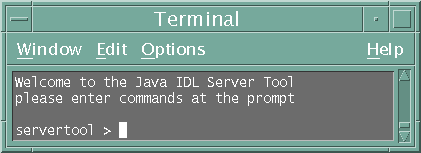

This document is a high-level overview of how to create a complete CORBA (Common Object Request Broker Architecture) application using IDL (Interface Definiton Language) to define interfaces and the Java IDL compiler to generate stubs and skeletons. For more information on the development process, and a more detailed tutorial on creating a CORBA application using IDL, see Getting Started with Java IDL: The Hello World Tutorial. You can also create CORBA applications by defining the interfaces in the Java programming language. For more information and a tutorial on this development process, see Java RMI-IIOP documentation.
For more information on transient vs. persistent servers, refer to the document Developing Servers.
This document contains:
PersistentHello.idl)The first step to creating a CORBA application is to specify all of your objects and their interfaces using the OMG's Interface Definition Language (IDL). IDL has a syntax similar to C++ and can be used to define modules, interfaces, data structures, and more. The IDL can be mapped to a variety of programming languages. The IDL mapping for Java is summarized in IDL to Java Language Mapping Summary.
The following code is written in the OMG IDL, and describes a CORBA object whose sayHello() operation returns a string and whose shutdown() method shuts down the ORB. To learn more about OMG IDL Syntax and Semantics, read Chapter 3 of the CORBA 2.3.1 Specification.
PersistentHello.idl
module Persistent {
interface Hello {
string sayHello( );
oneway void shutdown();
};
};
NOTE: When writing code
in OMG IDL, do not use an interface name as the name of a module.
Doing so runs the risk of getting inconsistent results when
compiling with tools from different vendors, thereby jeopardizing
the code's portability. For example, code containing the same names
could be compiled with the IDL to Java compiler and get one result.
The same code compiled with
another vendor's IDL to Java compiler could produce a different
result.
To complete the application, you simply provide the server
(PersistentServer.java), servant
(PersistentHelloServant.java), and client
(PersistentClient.java) implementations.
PersistentServer.java)The example server, PersistentServer, has the server's main() method, which:
This example provides an example of a persistent object server. For an example of the "Hello World" program with a transient object server, see Hello World with a Transient Server. For more discussion of CORBA servers, see Developing Servers.
PersistentServer.java
// PersistentServer.java
// Copyright and License
import java.util.Properties;
import org.omg.CORBA.Object;
import org.omg.CORBA.ORB;
import org.omg.CosNaming.NameComponent;
import org.omg.CosNaming.NamingContextExt;
import org.omg.CosNaming.NamingContextExtHelper;
import org.omg.CORBA.Policy;
import org.omg.PortableServer.POA;
import org.omg.PortableServer.*;
import org.omg.PortableServer.Servant;
public class PersistentServer {
public static void main( String args[] ) {
Properties properties = System.getProperties();
properties.put( "org.omg.CORBA.ORBInitialHost",
"localhost" );
properties.put( "org.omg.CORBA.ORBInitialPort",
"1050" );
try {
// Step 1: Instantiate the ORB
ORB orb = ORB.init(args, properties);
// Step 2: Instantiate the servant
PersistentHelloServant servant = new PersistentHelloServant(orb);
// Step 3 : Create a POA with Persistent Policy
// *******************
// Step 3-1: Get the rootPOA
POA rootPOA = POAHelper.narrow(orb.resolve_initial_references("RootPOA"));
// Step 3-2: Create the Persistent Policy
Policy[] persistentPolicy = new Policy[1];
persistentPolicy[0] = rootPOA.create_lifespan_policy(
LifespanPolicyValue.PERSISTENT);
// Step 3-3: Create a POA by passing the Persistent Policy
POA persistentPOA = rootPOA.create_POA("childPOA", null,
persistentPolicy );
// Step 3-4: Activate PersistentPOA's POAManager, Without this
// All calls to Persistent Server will hang because POAManager
// will be in the 'HOLD' state.
persistentPOA.the_POAManager().activate( );
// ***********************
// Step 4: Associate the servant with PersistentPOA
persistentPOA.activate_object( servant );
// Step 5: Resolve RootNaming context and bind a name for the
// servant.
// NOTE: If the Server is persistent in nature then using Persistent
// Name Service is a good choice. Even if ORBD is restarted the Name
// Bindings will be intact. To use Persistent Name Service use
// 'NameService' as the key for resolve_initial_references() when
// ORBD is running.
org.omg.CORBA.Object obj = orb.resolve_initial_references(
"NameService" );
NamingContextExt rootContext = NamingContextExtHelper.narrow( obj );
NameComponent[] nc = rootContext.to_name(
"PersistentServerTutorial" );
rootContext.rebind( nc, persistentPOA.servant_to_reference(
servant ) );
// Step 6: We are ready to receive client requests
orb.run();
} catch ( Exception e ) {
System.err.println( "Exception in Persistent Server Startup " + e );
}
}
}
PersistentHelloServant.java)The example servant, PersistentHelloServant, is the implementation of the Hello IDL interface; each Hello instance is implemented by a PersistentHelloServant instance. The servant is a subclass of HelloPOA, which is generated by the idlj compiler from the example IDL. The servant contains one method for each IDL operation, in this example, the sayHello() and shutdown() methods. Servant methods are just like ordinary Java methods; the extra code to deal with the ORB, with marshaling arguments and results, and so on, is provided by the skeleton.
PersistentHelloServant.java
// PersistentHelloServant.java
// Copyright and License
import org.omg.CORBA.ORB;
public class PersistentHelloServant extends Persistent.HelloPOA {
private ORB orb;
public PersistentHelloServant( ORB orb ) {
this.orb = orb;
}
/**
* sayHello() method implementation returns a simple message.
*/
public String sayHello( ) {
return "Hello From Persistent Server...";
}
/**
* shutdown() method shuts down the Persistent Server.
* See NOTE below.
*/
public void shutdown( ) {
orb.shutdown( false );
}
}
Note: For convenience of presentation in this example, the shutdown() method is included as part of the servant. This has been done in order to demonstrate the persistence of the server in this example. This is not a recommended programming convention for the following reasons:
PersistentClient.java)The example application client that follows:
PersistentClient.java
// Copyright and License
import java.util.Properties;
import org.omg.CORBA.ORB;
import org.omg.CORBA.OBJ_ADAPTER;
import org.omg.CosNaming.NamingContext;
import org.omg.CosNaming.NamingContextHelper;
import org.omg.CosNaming.NameComponent;
import org.omg.PortableServer.POA;
import Persistent.HelloHelper;
import Persistent.Hello;
public class PersistentClient {
public static void main(String args[]) {
try {
// Step 1: Instantiate the ORB
ORB orb = ORB.init(args, null);
// Step 2: Resolve the PersistentHelloServant by using INS's
// corbaname url. The URL locates the NameService running on
// localhost and listening on 1050 and resolve
// 'PersistentServerTutorial' from that NameService
org.omg.CORBA.Object obj = orb.string_to_object(
"corbaname::localhost:1050#PersistentServerTutorial");
Hello hello = HelloHelper.narrow( obj );
// Step 3: Call the sayHello() method every 60 seconds and shutdown
// the server. Next call from the client will restart the server,
// because it is persistent in nature.
while( true ) {
System.out.println( "Calling Persistent Server.." );
String helloFromServer = hello.sayHello();
System.out.println("Message From Persistent Server: " +
helloFromServer );
System.out.println( "Shutting down Persistent Server.." );
hello.shutdown( );
Thread.sleep( 60000 );
}
} catch ( Exception e ) {
System.err.println( "Exception in PersistentClient.java..." + e );
e.printStackTrace( );
}
}
}
Despite its simple design, the Hello World program lets you learn and experiment with all the tasks required to develop almost any CORBA program that uses static invocation.
This example requires a naming service, which is a CORBA service that allows CORBA objects to be named by means of binding a name to an object reference. The name binding may be stored in the naming service, and a client may supply the name to obtain the desired object reference. This example uses orbd (Solaris, Linux, or Mac OS X or Windows), which contains a Persistent Naming Service and a Server Manager.
When running this example, remember that, when using Solaris software, you must become root to start a process on a port under 1024. For this reason, we recommend that you use a port number greater than or equal to 1024. The following instructions assume you can set the -ORBInitialPort option to use port 1050 for the Java IDL Object Request Broker Daemon, orbd. You can substitute a different port if necessary.
To run this client-server application on your development machine:
idlj -fall -td . -verbose PersistentHello.idl
You must use the -fall option with the idlj compiler to generate both client and server-side bindings. This command line will generate the default server-side bindings, which assumes the POA Inheritance server-side model. For more information on the idlj options, see the man page for idlj (Solaris, Linux, or Mac OS X or Windows).
The idlj compiler generates a number of files. The actual number of files generated depends on the options selected when the IDL file is compiled. The generated files provide standard functionality, so you can ignore them until it is time to deploy and run your program. The files generated by the idlj compiler for PersistentHello.idl, with the -fall command line option, are:
This abstract class is the stream-based server skeleton, providing basic CORBA functionality for the server. It extends org.omg.PortableServer.Servant , and implements the InvokeHandler interface and the HelloOperations interface. The server class PersistentHelloServant extends HelloPOA.
This class is the client stub, providing CORBA functionality for the client. It extends org.omg.CORBA.portable.ObjectImpl and implements the Hello interface.
This interface contains the Java version of our IDL interface. The Hello.java interface extends org.omg.CORBA.Object, providing standard CORBA object functionality. It also extends the HelloOperations interface and org.omg.CORBA.portable.IDLEntity.
This class provides auxiliary functionality, notably the narrow() method required to cast CORBA object references to their proper types.The Helper class is responsible for reading and writing the data type to CORBA streams, and inserting and extracting the data type from Anys. The Holder class delegates to the methods in the Helper class for reading and writing.
This final class holds a public instance member of type Hello. Whenever the IDL type is an out or an inout parameter, the Holder class is used. It provides operations for org.omg.CORBA.portable.OutputStream and org.omg.CORBA.portable.InputStream arguments, which CORBA allows, but which do not map easily to Java's semantics. The Holder class delegates to the methods in the Helper class for reading and writing. It implements org.omg.CORBA.portable.Streamable.
This interface contains the methods sayHello() and shutdown(). The IDL-to-Java mapping puts all of the operations defined on the IDL interface into this file, which is shared by both the stubs and skeletons.
javac *.java Persistent/*.java
To start orbd, enter one of the following:
Solaris, Linux, or Mac OS X operating system:
orbd -ORBInitialPort 1050 -serverPollingTime 200&
Windows operating system:
start orbd -ORBInitialPort 1050 -serverPollingTime 200&
Note that 1050 is the port on which you want the name server to run. The -ORBInitialPort argument is a required command-line argument. Note that when using Solaris software, you must become root to start a process on a port under 1024. For this reason, we recommend that you use a port number greater than or equal to 1024.
The -serverPollingTime 200 argument specifies how often ORBD checks for the health of persistent servers registered via servertool. The default value is 1,000 ms. We are setting this parameter to 200 ms in this example to enable more frequent monitoring of failures. In the event that a server failure is detected, the server will be restarted to its proper state.
To register a persistent server with the ORBD, the server must be started using servertool (Solaris, Linux, or Mac OS X or Windows), which is a command-line interface for application programmers to register, unregister, startup, and shutdown a persistent server. When the servertool is started, you must specify the port and the host (if different) on which orbd is executing.
To start the Hello server,
servertool -ORBInitialPort 1050 (Solaris, Linux, or Mac OS X operating system) start servertool -ORBInitialPort 1050 (Windows operating system)
Make sure the name server (orbd) port is the same as in the previous step, for example, -ORBInitialPort 1050. The servertool must be started on the same port as the name server.
The servertool command line interface appears:

servertool > register -server PersistentServer -applicationName s1
-classpath path_to_server_class_files
The servertool registers the server, assigns it the name of "s1", and displays its server id.
java -classpath . PersistentClient
The terminal window or DOS prompt displays the following messages:
Calling Persistent Server.. Message From Persistent Server: Hello From Persistent Server... Shutting down Persistent Server.. Calling Persistent Server.. Message From Persistent Server: Hello From Persistent Server... Shutting down Persistent Server..
In this example, the client invokes the sayHello() method every minute and then kills the persistent server, which will be automatically restarted the next time the client invokes the sayHello() method.
When you have finished this tutorial, be sure to shut down or kill the name server (orbd). To do this from a DOS prompt, select the window that is running the server and enter Ctrl+C to shut it down. To do this from a shell on Solaris, Linux, or Mac OS X, type pkill ordb from a terminal window. The server will continue to wait for invocations until it is explicitly stopped.
Running the Hello World Application on Two Machines describes one way of distributing the simple application across two machines - a client and a server.
The following code provides an example of a Makefile that can be used to run this example. Change the location of JAVA_HOME to the location where you installed J2SE 5.0. Change the CLASSPATH variable to the directory where you have created the sample application. This example is for the Solaris, Linux or Mac OS X operating systems, modify accordingly if using the Windows operating system.
#Change to location of your Java SE installation.
JAVA_HOME=/home/user_name/j2sdk1.5.0/
CLASSPATH=.
JAVAC=$(JAVA_HOME)/bin/javac
JAVA=$(JAVA_HOME)/bin/java
ORB_INITIAL_PORT=1050
ORB_INITIAL_HOST=localhost
ORB_ACTIVATION_PORT=1049
#Change ClassPath based on where your PersistentServer is located.
export CLASSPATH=<path to server class files>
IDLJ :=$(JAVA_HOME)/bin/idlj
ORB_PROPS=-Dorg.omg.CORBA.ORBInitialHost=$(ORB_INITIAL_HOST)
-Dorg.omg.CORBA.ORBInitialPort=$(ORB_INITIAL_PORT)
IDLJ_FLAGS=-fall -td . -verbose
ORBD=${JAVA_HOME}/bin/orbd -ORBInitialPort ${ORB_INITIAL_PORT}
-port ${ORB_ACTIVATION_PORT} -serverPollingTime 200
-serverStartupDelay 1000
SERVERTOOL=${JAVA_HOME}/bin/servertool
all: clean build run
build: stubs
stubs:
$(IDLJ) $(IDLJ_FLAGS) PersistentHello.idl
$(JAVAC) *.java
$(JAVAC) Persistent/*.java
runc:
$(JAVA) -classpath . PersistentClient
runorbd:
$(ORBD)
# Enter the following command in servertool to register server:
# (without the # sign)
# register -server PersistentServer -applicationName s1
-classpath path_to_server_class_files
servertool:
$(SERVERTOOL) -ORBInitialPort $(ORB_INITIAL_PORT)
clean:
rm -rf Persistent
rm -rf *.class
To run the application using the Makefile, enter the following commands: